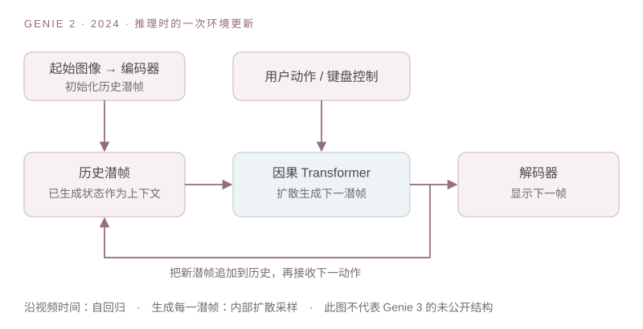
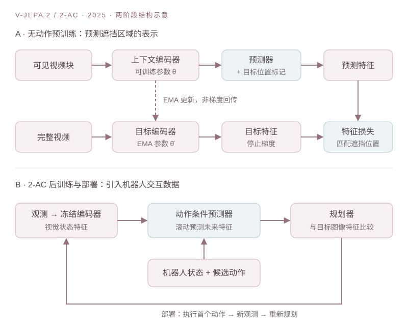

看到桌上的杯子，人不只知道“那里有一个杯子”，还会预想：向右推，它会滑动；推得太远，它会掉下桌沿；杯子里有水，后果又会不同。
这种在行动之前预测后果的能力，是理解世界模型最直接的入口。世界模型的价值，不在于把世界复刻得多漂亮，而在于它保留的信息能否支撑可靠的预测与决策。
理解世界模型，可以沿着“心智模型 → 状态表示 → 动力学预测 → 规划与行动”这条线索展开。不同技术路线的差别，主要在于保留什么状态、预测什么变化，以及如何利用预测选择行动。
1. 一个实用定义：可用于预测的内部模型
在控制与模型式强化学习的语境中，可以把世界模型理解为：根据观测历史估计环境状态，并预测动作可能带来何种变化的模型。它通常是整个智能体系统的一个组件，而不是智能体本身。
可以用“心智模型”作类比：人不会在脑中保存世界的全部细节，而是保留与判断有关的对象、关系和经验。对应到机器学习，表示世界、预测变化、服务规划与控制是三个实用观察角度。其中，规划与控制通常由世界模型、规划器和策略协同完成。
用一个简化的概率表达式表示：
(1)
是观测， 是动作， 是内部状态表示。真实环境往往只能被部分观测，因此一张图像未必足以确定状态：球的位置可以相同，速度却可能不同；门看起来关着，却可能上锁或没上锁。历史、记忆和不确定性都可能成为必要信息。
这里可以把 latent MDP、learned dynamics、simulator 三个建模概念连起来理解：潜状态压缩决策所需的信息，动态模型描述状态如何转移，反复调用动态模型则形成内部 rollout。只有当潜状态足以概括相关历史时，把它近似看作马尔可夫状态才合理。
规划器再利用预测比较不同动作；策略也可以通过模型生成的想象轨迹来学习。因此，预测模型、规划算法、行动策略应当区分开来。2018 年的 World Models 就研究了压缩表示、环境动态与控制器的组合，而不是只生成逼真的画面。[World Models]
- 观测看到局部世界
- 状态估计结合历史与记忆
- 预测候选后果比较不同动作
- 选择并执行优化目标，约束风险
- 再观测检查预测，修正计划 ↺
2. 从“接下来怎样”到“如果这样做，会怎样”
被动预测问的是：“在眼前这个场景里，接下来可能发生什么？”动作条件预测则问：“如果我执行动作 A，结果是什么？换成动作 B 呢？”二者相关，但不能互相替代。
例如，视频里经常出现“手碰杯子后杯子移动”。这不等于模型已经区分接触力、桌面摩擦和镜头运动，更不等于它能预测训练数据里罕见的干预。让预测条件包含动作，是走向可控模拟的一步；可靠的因果与反事实泛化仍需要额外检验。
下面的小实验刻意不用神经网络。我们让一个球受到瞬时推动后，在水平面上滑动，以最简单的物理规则说明：模型即使能输出平滑轨迹，也可能因为参数估计错误而作出错误决策。
同一次推动，为什么会停在不同位置？
目标区在 2.4–3.0 米处。调整初速度和模型假设，比较模型预测与参考环境的停止位置。
模型预测约 2.45 m；参考环境约 1.63 m。模型以为到达，实际尚未到达。
教学模型：水平面、恒定动摩擦、无滚动及碰撞，g = 9.8 m/s²。参考环境是手工设定的规则，不是现实测量；图中不含训练模型。
实验使用的停止距离为 。把模型摩擦系数调到 0.18，两条预测就会对齐；保持两者一致，再把初速度调至约 3.0 m/s，球会停在目标区内。
这个小例子揭示了模型偏差可以转化为行动偏差。真实系统里，误差不只有一个参数，还可能来自未观测状态、接触模式、环境变化和错误的状态表示。规划得再精细，也可能只是在一个错误的世界里精确计算。
3. 四种侧重点，不是四支互斥阵营
视频生成：预测可见的世界
视频数据提供丰富的运动、遮挡和交互线索。一个强大的视频模型可能学到有用的动态规律，但漂亮的片段不能证明其具备可靠的动作干预接口。
2024 年的 Genie 进一步探索了从无动作标签的视频中学习可交互环境，展示了生成与控制之间的连接。不过，“支持交互”仍不等于“物理准确”，更不能直接推出可以安全替代真实机器人环境。[Genie]
Genie 初代包含视频 tokenizer、潜在动作模型与动态模型。潜在动作模型从连续帧中学习离散动作表示，帮助动态模型建立可控制的变化接口；这些潜在动作并不天然等同于机器人关节命令。
Genie 2 则公开采用自回归潜空间扩散：根据历史潜帧和用户动作，生成下一潜帧，再解码为画面。自回归描述沿视频时间推进，扩散描述每一步内部如何生成；这正是“自回归与扩散可以组合”的具体例子。[Genie 2]

显式 3D：让空间结构可以被检查
网格、点云、辐射场或 3D Gaussian 等表示，有助于把多视角一致性和空间关系变成更明确的问题。但它们表达的信息并不相同：能渲染新视角的表示，不一定带有可碰撞表面、物体语义、质量或摩擦参数。
生成 3D 场景并不自动等于建立动力学模型。要接入物理引擎，还需要合适的几何、材料、边界条件与数值求解。物理引擎也只是在给定假设与精度下模拟，不能保证所有真实行为都严格正确。
3D 的计算成本取决于表示方式：密集体素在三个方向同时提高分辨率时，单元数呈立方增长；稀疏结构只记录部分空间，网格以表面为中心，隐式场则通过函数查询几何或外观。因此，比较成本时要同时看存储形式、采样密度和渲染方式。
World Labs 的 Marble 是生成式空间表示的一个例子。2025 年 9 月的预览强调更大、更清晰的可探索 3D 场景；11 月的发布加入文本、图像、视频与粗略 3D 布局等输入，以及编辑、扩展、组合和导出能力。这些进展提升了空间内容的可操作性，但导出 Gaussian splats 或 mesh 并不自动提供可靠的动作动力学。[Marble、Marble]
JEPA：预测表示，不必复原每个像素
JEPA 的核心思路是在表征空间中预测目标表示，而非要求模型重建全部可见细节。I-JEPA 以图像为对象学习表征；不能因此就说所有 JEPA 都自带动作输入或规划能力。[I-JEPA]
后续 V-JEPA 2 区分了无动作视频预训练与动作条件后训练，并展示了机器人规划实验。这一划分很重要：观察视频学到的表示，与能对自身动作作预测的模型之间，还存在对齐工作。[V-JEPA 2]
预训练时，上下文编码器只看到可见区域，预测器结合目标位置的 mask tokens 预测被遮挡区域的特征；目标编码器为完整视频提供监督表示。目标分支使用停止梯度，其参数由上下文编码器的指数移动平均更新。这里学习的是表征，不是要求还原每个像素，也不必是“只看过去、预测未来”的时间因果任务。

在 V-JEPA 2-AC 阶段，视觉编码器保持冻结，用机器人交互轨迹训练动作条件预测器，输入还包括末端执行器状态。部署时以目标图像的表征为参照，规划动作序列，并在执行后根据新观测重新规划。论文的“zero-shot”指无需在这些新部署环境收集训练数据或进行任务专用训练，不是“从未使用机器人数据”。[V-JEPA 2]
预测表示可以降低对无关细节的重建要求，但并不天然保证学到因果结构，也不能仅凭架构就断言计算更省或泛化更强。仍要通过明确任务、对照实验和分布外测试评估。
Dreamer：让预测直接服务于学习行动
Dreamer 一类方法把环境动态学习和策略学习连接起来，利用想象轨迹改进策略。其关注点不是渲染给人看，而是预测对控制是否有帮助。[DreamerV3]
这一系列也持续在发展：初代在潜空间想象中学习行为，V2 使用离散潜状态，V3 通过一套更稳健的训练配方扩展到多种任务。2025 年的 Dreamer 4 则研究更可扩展的 Transformer 世界模型与 shortcut forcing 目标，在 Minecraft 中利用离线数据学模型，再在模型内部进行强化学习。它与 V3 在线收集环境经验的设置不同；“离线”不是“不需要数据”，也不能把 Minecraft 结果直接外推到真实机器人。[Dreamer、DreamerV2、Dreamer 4]
这也说明“在生成环境中训练智能体”与“智能体内部拥有可学习世界模型”并非同一概念。游戏可以提供外部环境；世界模型也可以作为内部推演工具。两者能够结合，却不应混为一谈。
SIMA：谁在生成的世界里行动？
SIMA 对应系统中采取行动的一端：初代通过画面观察与键鼠动作完成跨游戏语言指令；2025 年的 SIMA 2 将 Gemini 纳入核心，拓展了目标推理、对话与自主改进。官方还展示了在 Genie 3 生成环境中的泛化测试，以及利用生成环境经验进行后续训练的实验。[SIMA 2]
把两者连起来，就得到 Genie 提供环境、SIMA 采取行动、环境反馈再帮助学习 的闭环。由游戏迁移到机器人时，还需要对齐键鼠操作与机器人动作空间，并处理传感噪声、接触动力学和执行误差。
4. 后续发展：改进究竟发生在哪一层？
| 系列 | 早期重点 | 后续变化（截至 2026-08-05） |
|---|---|---|
| Genie → Genie 2 → Genie 3 | 初代从视频学习潜在动作与可交互环境；Genie 2 推进到更丰富的动作条件环境生成 | 2025-08 的 Genie 3 官方展示 720p、24 fps 实时交互与分钟级一致性；它仍有记忆和动作空间限制，不是无限时长精确模拟器。[Genie 3] |
| I-JEPA → V-JEPA → V-JEPA 2 | 从静态图像的表征预测扩展到视频；V-JEPA 用遮挡时空特征学习运动与外观表示 | V-JEPA 2 扩大数据和模型规模，并用 2-AC 把表示接到动作预测与机器人规划。[V-JEPA、V-JEPA 2] |
| V-JEPA 2 → V-JEPA 2.1（2026-03） | 强全局理解不一定带来高质量的每个位置的局部特征 | 2.1 将监督扩展到可见与遮挡 tokens，并在中间层增加监督，结合图像/视频 tokenizer 和规模扩展，强化稠密空间特征。[V-JEPA 2.1] |
| DreamerV3 → Dreamer 4（2025-09） | V3 强调跨任务稳定学习与潜空间想象 | Dreamer 4 研究更强的可交互世界模型，以及仅用离线环境数据进行想象训练；二者任务数据设置不同，不宜只比较单个成功指标。 |
| SIMA → SIMA 2（2025-11） | 跨游戏执行语言指令 | 加入 Gemini 推理、对话和经验驱动的自主改进；这是智能体层面的进展，并非新的环境生成骨干。 |
| Marble 预览 → 多模态发布 → World API | 生成持续存在、可探索的 3D 场景 | 从生成结果扩展到编辑、组合、导出；2026-01 的 API 让环境生成可编程地接入应用。[World API] |
2.1 的改动值得单独理解：若只要求遮挡位置的预测准确，可见 token 未必保留充分的局部细节。把可见位置也纳入训练损失，是改善稠密特征的一种机制设计；多层监督则把学习信号送到中间表示。这是训练目标层面的变化，不只是“再堆参数”。论文还报告了机器人抓取等任务上的改善，但这些实验不能外推成所有机器人和场景的统一成功率提升。[V-JEPA 2.1]
这些路线不必争出一个单一赢家：生成环境扩展试错空间，显式 3D 改善空间编辑接口，潜空间预测关注可学习动态，智能体把能力转化为行为。它们更可能在具体系统里相互组合。
5. 世界模型与语言模型，边界在哪里？
“语言模型处理词，世界模型处理像素”是一个便于传播、却不够准确的二分法。模型可以接收多模态信息；世界状态也可以用向量、符号、对象、图结构或连续潜变量表示，并不局限于像素和体素。
更有用的区分是职责：
| 系统职责 | 需要解决的问题 |
|---|---|
| 任务理解 | 用户想完成什么，约束是什么？ |
| 状态与动态预测 | 当前环境怎样，不同动作将带来什么后果？ |
| 规划与控制 | 在目标与风险之间，下一步应当做什么？ |
| 执行与反馈 | 动作能否实现，结果是否符合预期？ |
语言模型可以参与任务分解与工具协调，世界模型提供环境预测，控制器负责动作执行。这是一个可用的系统划分，而不是各类模型永远不能跨越的能力边界。
这也解释了与真实环境交互的重要性：视觉数据提供丰富的观察，动作与反馈则记录干预后的结果。语言、观察与交互经验可以共同参与学习，让系统把任务描述与可执行的行动联系起来。
6. 怎么证明它“有用”，而不仅是“像真的”？
评价标准应由使用场景决定。创作工具可以容忍某些物理错误；机器人抓取与驾驶决策则不能只看视觉质量。
学习一项世界模型工作时，可以按以下五项记录实验结果：
- 动作是否有效？在相同初始状态下改变动作，预测是否相应变化？
- 状态能否保持？离开视野再回来，物体、布局和事件结果是否一致？
- 误差如何积累？单步准确之外，多步滚动预测是否迅速偏离？
- 是否知道自己不确定？面对陌生场景，能否拒绝过度自信的预测？
- 是否改善真实任务？相比不用模型的基线，是否减少试错、提升成功率，同时控制风险？
测试还需要避免训练与评估场景泄漏。一个模型在熟悉画面里预测准确，不能证明它能处理新的物体组合、动作范围和接触关系。
7. 从应用愿景到工程约束
机器人、自动驾驶、可穿戴空间助手、游戏与 AI 智能体，对世界模型提出了不同要求。下表把各场景中的用途和主要工程难点放在一起。
| 场景 | 世界模型可能提供什么 | 仍需解决什么 |
|---|---|---|
| 机器人 | 在执行前比较动作后果 | 接触误差、传感噪声、仿真到现实差距 |
| 驾驶仿真 | 构造场景并测试决策 | 长尾覆盖、行为有效性、独立安全验证 |
| 空间助手 | 维护环境与物体状态 | 隐私、遮挡、持续定位和错误纠正 |
| 游戏与创作 | 交互式生成、快速探索方案 | 长期一致性、可编辑性、成本与版权 |
| 智能体训练 | 提供额外试错与想象轨迹 | 环境漏洞利用、目标偏差、迁移失败 |
Waymo 在 2025 年 12 月的技术说明中讨论了端到端梯度训练与结构化中间表示共存的设计。对象、语义属性和道路图既是可检查的接口，也服务于闭环仿真与评估。因此，“端到端”不等于取消所有结构，“有结构”也不等于系统不做联合学习。结构化接口为状态检查和闭环测试提供了具体抓手。[Waymo]
仿真到现实的差距（sim-to-real gap）不是画质问题。一个环境可以非常逼真，却在最重要的行动后果上犯错。相反，一个外观简陋的模型，只要保留了任务相关变量，也可能对控制有价值。
实际系统中，闭环反馈用于修正状态估计，误差监测用于发现预测失配，独立测试则检验模型在新场景下的表现。三者分别对应运行时纠偏、故障识别和部署前验证。
另一个容易忽略的问题是模拟器漏洞利用：智能体可能在模型内部取得高回报，迁移到真实环境后却失败。除了检查预测误差，还需要测试奖励目标是否合理、训练场景是否覆盖目标任务。训练数据与交互日志的隐私、数据偏差和审计成本，也会影响系统的实际使用。
8. 总结：表示、预测与行动如何连接
世界模型这部分内容，可以整理为五个相互关联的知识点：
- 状态表示是起点。模型需要从部分观测中提取任务相关信息；历史和记忆帮助区分外观相同、内部状态不同的场景。
- 动作条件预测连接观察与干预。预测“接下来会怎样”与比较“执行不同动作会怎样”对应不同的问题，后者为规划提供候选结果。
- 不同路线保留不同信息。视频生成侧重可见变化，显式 3D 侧重空间结构，JEPA 侧重表征预测，Dreamer 把学习到的动态用于想象中的策略训练。
- 世界模型与智能体分工协作。Genie 与 SIMA 展示环境生成和行动策略的配合；V-JEPA 2-AC 展示视觉表示、动作预测与闭环规划的连接。
- 评估最终要落到任务。单步误差、长期一致性、动作有效性和真实任务收益需要一起观察；执行后的反馈让系统有机会持续修正预测。
上一篇《从噪声到镜头：读懂 AI 视频生成》讨论了画面如何生成；这一篇想强调的是：从生成世界的外观，到承担现实行动的后果，仍需要一整套可验证的系统。
来源与延伸阅读
节目笔记：[硅谷 101：全面解析世界模型、硅谷 101：视频生成与世界模型]。
- 概念起点：[World Models (2018)]。
- 预测与策略学习：[DreamerV3]。
- 表征预测：[I-JEPA、V-JEPA 2]。
- 交互生成环境：[Genie]。